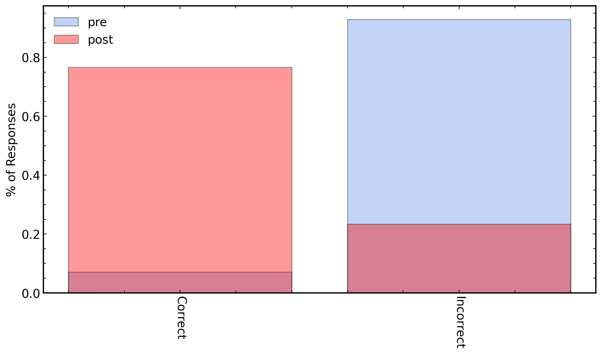
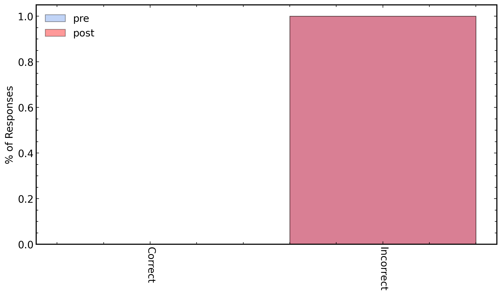
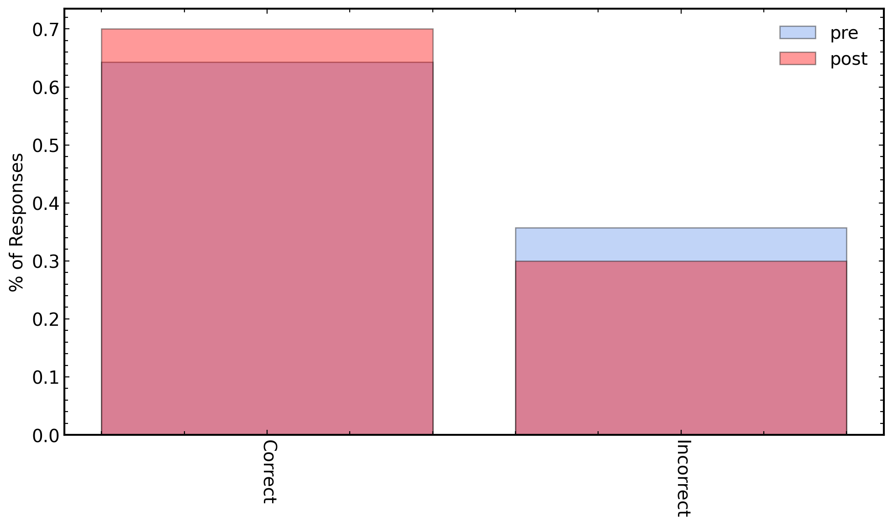
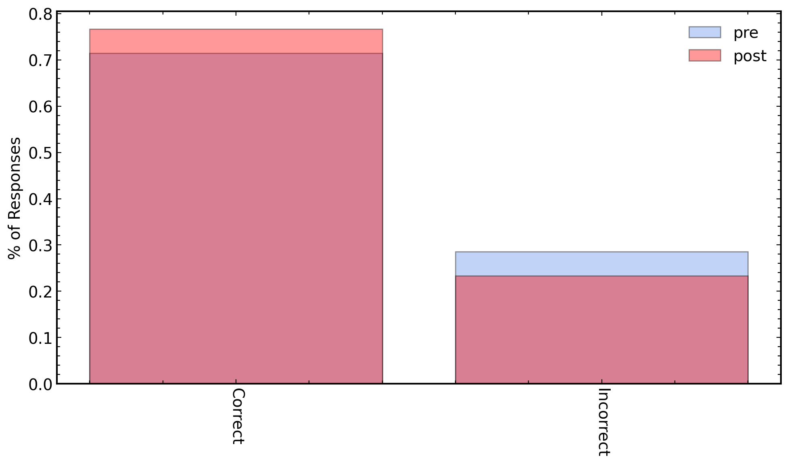
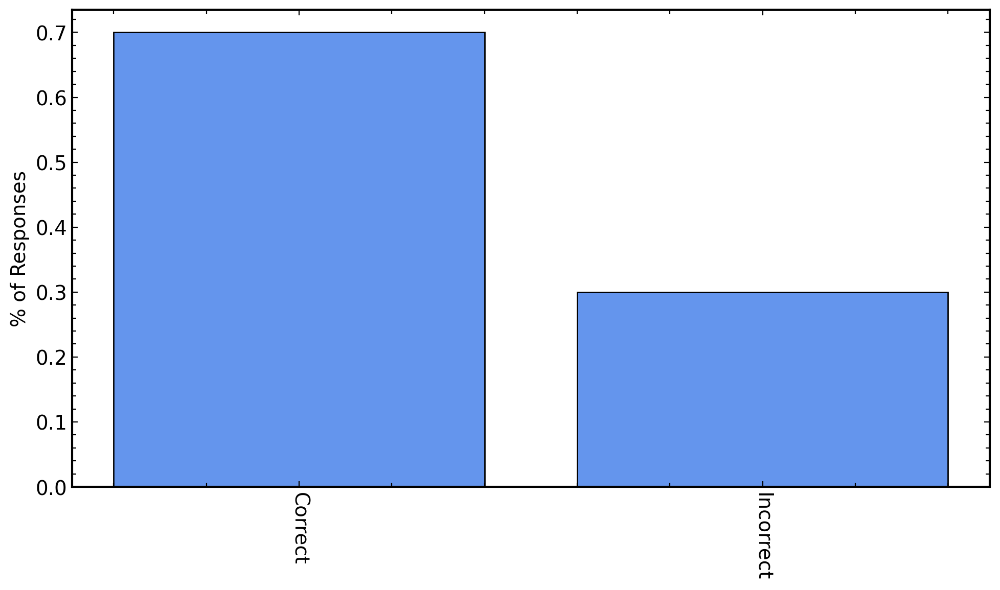
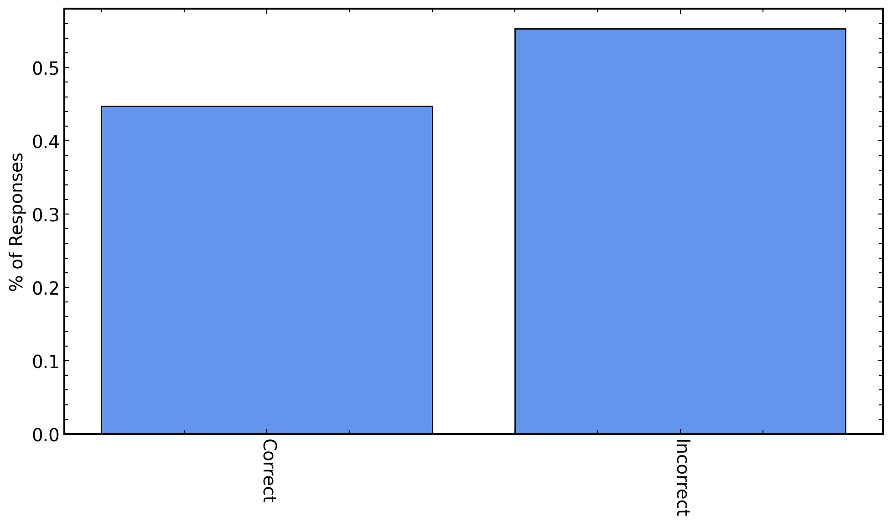

(0) Two stars, Star A and Star B, are in a cluster and are labelled on the color-magnitude diagram below. Which of these two stars is older?

(1) The image below shows three isochrones (A, B, and C) that can be used to fit real cluster data. Rank the ages of the isochrones from youngest to oldest.

(2) Shown below is a color-magnitude diagram that includes data from a star cluster (black points) and a model isochrone (red line). What variables would you need to adjust in order to fit the isochrone to the cluster data? (Choose all that apply)

(3) Rank the temperature (from hottest to coldest) of these stars based on their color indexes given in the table below.

(4) The absolute magnitude of three main sequence stars (1, 2 and 3) are provided in the table. These stars are all part of the same cluster. Rank how bright these stars will appear from Earth, from brightest to dimmest.

(5) The apparent and absolute magnitudes of three main sequence stars (1, 2 and 3) are provided in the table. These stars are all part of the same cluster. Rank how how far away these stars are from Earth, from closest to farthest.

(6) You performed a search of the Gaia data catalog in the region around M67 and produced the below color-magnitude diagram. You want to display all/only the stars from the cluster M67. Which of the following could you adjust so that the color-magnitude diagram displays all/only the stars from your cluster? (Choose all the apply)
(7) Which of the following Python functions (shown below) describes this mathematical expression:

(8) Shown below is a color-magnitude diagram that includes data from a star cluster (black points) and a model isochrone (red line) that was produced with the following code. Which of the following are the changes you would make to the code that fits this isochrone to your data. (Choose all that apply)
